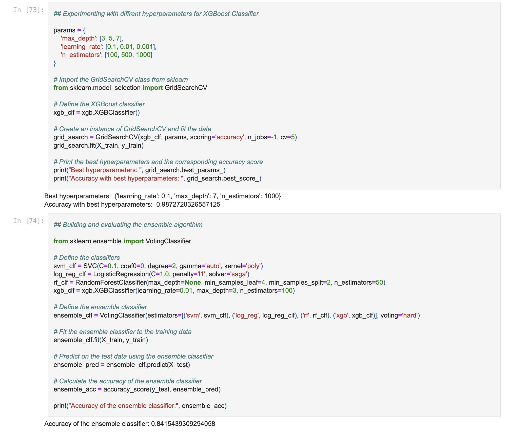
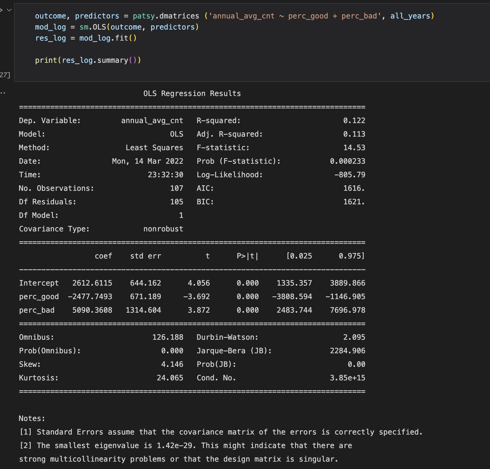
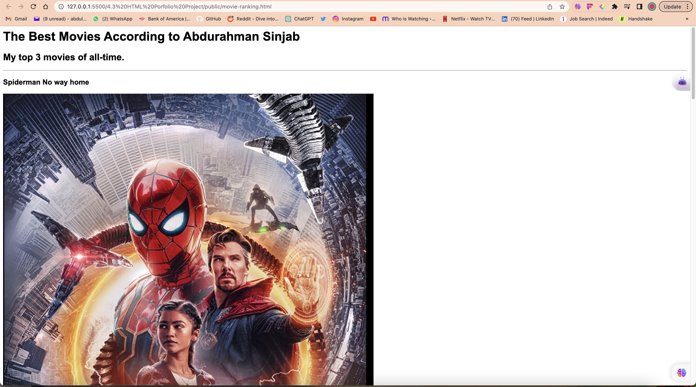

Abdulrahman Sinjab Portfolio
Education
University of California, San Diego
- B.S. Mathematics-Computer Science (Sept 2021 - Jun 2024)
- GPA 3.53 Chancellor Associate Scholar
- Relevant Coursework:
- Data Structures & Algorithms | Object-Oriented Programming | Business Analytics |
Supervised and Unsupervised Machine Learning | Data Science in Practice | Research Methods | Statistical Methods | Discrete Math | Linear Algebra
Experience
Data Science Intern, UCSD ECE Department
- Developed an app for physical therapists that implements Deep Learning to classify whether the exercises that patients conducted were “Good” or “Bad” based on measurements taken from video recordings of patients.
- Applied various libraries such as Pandas and NumPy to wrangle data and group exercise repetitions based on the type of exercise.
Research Intern, UCSD Shiley Eye Center
- Acquired knowledge of lab equipment and procedures and briefed patients about the types of equipment that we
may use in the study.
- Used Excel in collecting and normalizing patients' data which consisted of the results across various eye exams
along with the type of drug they were assigned to take.
Projects

- Developed and led a group project to combat Ethereum fraud by designing and implementing methods to classify and predict fraudulent transaction anomalies in the network.
- Preprocessed and analyzed two Ethereum datasets from Kaggle to develop a supervised machine learning decision tree ensemble incorporating XGBoost, logistic regression, and random forests, successfully classifying fraudulent and safe transactions with a 97 percent accuracy score.
- Implemented normalized confusion matrix and precision-recall curves to measure and evaluate our model's performance and identify improvement areas.

- Designed interactive geospatial data-driven maps and other front-end visualizations with Jupyter Notebook.
- Increased understanding of risk analysis of pollution rate within cities located along the west coast region and the
rate of cardiovascular disease among the populations within the cities.
- Supervised and feature-engineered the back-end portion of the project using a linear regression model that
classifies if a "west coast" city population is at risk of cardiovascular diseases based on the rate of pollution.

Skills
- Languages: Python | Java | R | SQL | HTML/CSS | JavaScript | Node.js | React.js | Bootstrap | Mongoose | MongoDB
- Libraries: NumPy | Pandas | SciKit-Learn | PyTorch | TensorFlow | Matplotlib
- Tools: Jupyter | Git | GitHub | Visual Studio | PyCharm | Intelij